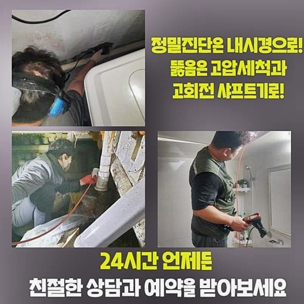
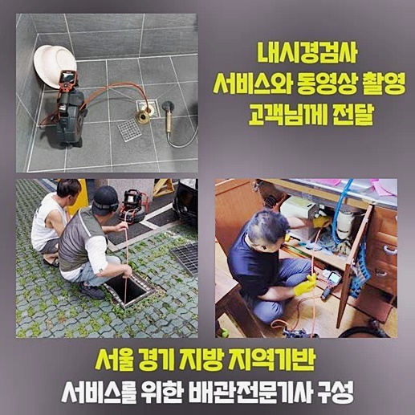
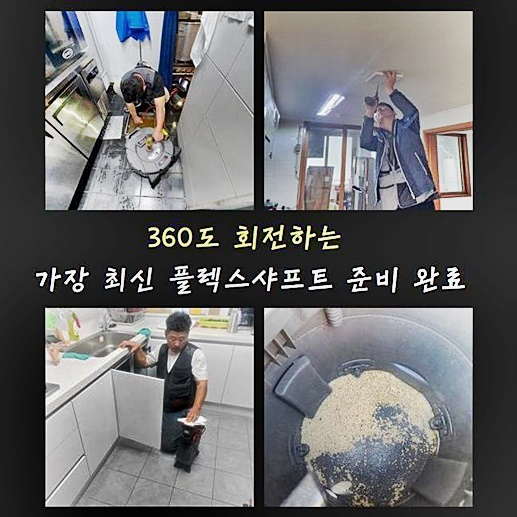
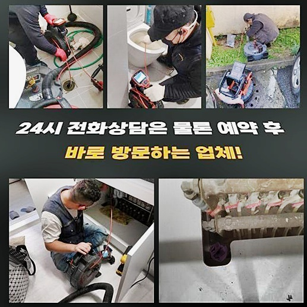
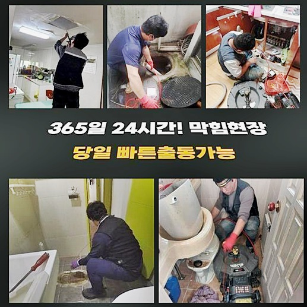
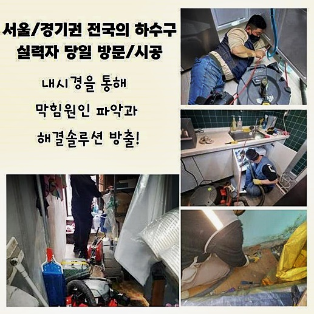

🏠 성북구 종암동씽크대뚫음 보문동 배관내시경카메라 설비
용인시 처인구 배관막힘 전문 시공 후기

📋 작업 개요
- 위치: 용인시 처인구, 수원시 영통구, 화성시 동탄
- 서비스 유형: 배관막힘, 고압세척, 내시경점검
- 작업 일시:
- 업체명: 하수구수사대 (010-5615-2118)
🔍 문제 상황
성북구 종암동씽크대뚫음 보문동 배관내시경카메라 설비
관리를 잘해주는 주거지여도 때때로 발생되는 문제가 있기 마련입니다
예상하셨을수도 있겠지만 이에 해당하는 피해들은 통수가 안되는 문제죠
물들이 안빠지면 해당 공간은 악취들로 가득해지고 평온했던 주거지가 갑작스레 비보건적인 모습으로 바뀝니다
장애가 발발한바람에 배수자체가 안되고 오염원이 솟구치는 상황들이 벌어질 시 위생적으로도 좋지않은 신속히 좋지못한 영향을 미치겠죠?
해당 상황이라면 청결히 뚫는 대응책들을 함께 찾는것이 하수 시스템 오류를 해결해내는 저희의 주된 업무입니다
지금부터 고객의 거주지서 실시된 올곧은 수순을 상세히 일러드리고자 하는데요
의뢰인분께선 별도로 자리하고있는 세탁라인으로 하수가 내려갈 기미를 보이지않는다고 저희의 전문인들에게 의뢰를 하셨죠
통수오류를 주업무로하는 저희는 우선 갖춰야하는 기기인 샤프트장치 석션도구 내시경기기를 마련하고 고객님댁으로 달려갔는데요
해당 장소에 도달하니 악취들과 오염원이 솟아오르는 것을 알게 되었죠
곧장 오수들을 모은 뒤 배수과정을 시도하기로 했는데요
이러한 절차에서 간단한 세제 오염물이 아닌, 하수관로에 자리잡았던 오염물들이 솟아오르며 냄새들을 발생케했죠

🔎 원인 분석
💡 전문가 진단: 정밀 진단 장비를 사용하여 슬러지의 고착 여부를 판명하고 타격/세척 작업을 실시했습니다.
간혹 싱크대부분과 발코니부분의 관로들이 이어진 사항이 있어서 이것들이 접촉한지 체크해보는 진단절차들을 수행하는데요
곧장 이물들을 파악하도록 고객에게 얼마전 자리를 잡게되어버리는 징조가 보인다거나 솟아오르는 증세가 있진않았나 물어보았죠
고객분은 앞서서 하수도를 청소할 목적으로 집에 있던 세제성분과 발포용품을 사용했다 하셨는데요
그래서 씽크대쪽과 이어진 하수관이 주범일거란 가능성들이 농후해보였습니다
저희들이 달려갔던 현장내부의 결함부위를 시정하려면 원인들을 세심히 관찰하고 있어야하겠습니다
그래서 내시경장치를 운용한다음 결함이 생긴 배수구를 점검하기에 앞선 준비까지 마쳤죠
안쪽이 확실히 안보이게 된다면 석션장비를 사용한 뒤 고여있는 오수들을 배출시켜줍니다
석션청소기를 이용해 첫단계의 세척을 수행했습니다
작업하여주는 시점에서 잔해물들과 오염물이 제거됬지만 확실한 연유는 파악이 덜 된 상태였습니다
흔하게 보이는 석션으로 해결될 수 없는 사례들이 다수 존재하므로 즉각 내시경으로 문제를 보이는 내부모습을 체크해주어야 되겠습니다
이물질들을 자세하게 보니 섬유조각과 유사한 이물이였죠
위치 상 세탁실에서 흐르게된 미량의 오염물일 가능성들이 충분했습니다

🔧 작업 과정
일단 이러한 이물을 제거시키고 이젠 심부까지 청소에 심혈을 기울였습니다
본격적인 사안에서는 깊숙한 지점의 문제들을 시정하도록 완전한 세척을 하기위해 가용되어야하는 노하우와 기기들을 이용하는데요
내시경장치를 이용하는 연유는 심부의 문제를 명확하게 인지하고 높은 퀄리티의 세척들을 도와주기때문에 그렇죠
석션장치로 흡입을 수행한 뒤 케이블에 부착되어있는 렌즈로 구석구석 상세히 보았죠
벽면까지 관찰하며 문제들이 모여있던 부위를 확인했어요
이와같이 배수장애는 서둘러 야기되고 시정도 간단허나은 않은데요
허나 전문적 접근과 경험을 함양하고 있는 전문진의 실력들로 고객님의 걱정을 신속히 완화시키는것이 가능하죠
막힘자체의 연유와 구간을 인지하고자 내시경장비를 안쪽으로 투입해보았습니다
사용한 하수들은 얽히고 섥힌 하수도로 나가는데 하수도는 짧을수도 있지만 장거리로 뻗어있는 경우도 있습니다
그리하여 눈으로는 알지못하는 배관 안쪽을 내시경장비로 이곳저곳 보았죠
깊은곳까지의 상태를 보니 안에는 이물과 작은 잔재가 내부에서 뒤죽박죽인 채로 있었죠
해당 이물들은 녹는것이 아니기때문에 신속히 고착되므로 돌과같이 굳을수 있어요
상황마다 가용되는 장비들이 차이를 보이는데 가령 이물질의 크기가 클 땐 오거가 부착된 장치로 제거시키고 석션장치로 빨아당겨줍니다
심한 상황이면 이물이 슬러지모양으로 이곳저곳에 뭉친상태라면 이물을 탈락시키는 샤프트장치가 필요할텐데요
이물끼리 뒤섞이며 굳어버린 슬러지와 기름기를 샤프트장비로 분쇄시키며 청소시켰어요
샤프트의 경우 관로에서 돌아가며 고착물들을 잘게 조각내는 기능을하죠
저희의 전문가들이 찾아뵈었던 곳의 모든 이물이 사라지게 된 후 내시경 내시경으로 재차 진단을 진행시켜서 작업들의 상태를 확인해보고 물이 잘 내려가는지 확인하는 테스트들도 수행했는데요
그 다음으로 증상의 원인이 될 수 있는 잔여 잔해가 남아있지않게 석션장치로 흡입해주면서 꼼꼼히 세척하여 깨끗하게 만들어주었어요
이러한 문제들을 방지하고자 하면 꾸준한 진단과 관리가 동반되어야해요
씽크대쪽과 이어져있는 배수로에서 음식잔해가 중간에서 고착되어 솟아오르는 경우도 자주 보여요


✅ 작업 완료
하수시스템 오류가 야기되었을 시 침착함을 유지하시고 저희의 전문인에게 연락주세요
저희의 작업은 그저 작업수행만을 하는게아니기에 고객님댁의 보건적 상황을 지켜주는 절차라 할 수 있습니다
저희의 경우 막힘을 제대로 해결해주고 청결한 물사용을 이어갈 수 있게 돕겠습니다
만일 이에 해당하는 문제를 겪으신다면 신속히 저희께 도움을 청해보시기 바라요
저희들은 고객의 안락한 생활을 지켜내는데에 노력합니다



⚠️ 하수구 배관 막힘 예방 및 관리 가이드
- ✅ 머리카락, 비닐, 물티슈 등 물에 분해되지 않는 이물질은 절대 흘려보내지 마세요.
- ✅ 기름기 많은 식기는 설거지 전 키친타올로 먼저 기름때를 닦아내세요.
- ✅ 주기적으로 배수구에 뜨거운 물을 가득 부어주어 유지방 고착을 방지하세요.
- ✅ 작업 후 1년 이내 재발 시 무상 A/S 보증 서비스를 제공합니다.
💡 핵심 정리
- 확실한 장비 작업(내시경 점검 및 샤프트 스케일링)으로 원인을 뿌리 뽑습니다.
- 작업 후 1년 이내에 동일한 부위 재발 시 100% 무상 A/S 서비스를 보장합니다.
- 서울 · 경기 · 인천 전 지역에 24시간 언제든 긴급 출동할 수 있도록 항시 대기 중입니다.
❓ 자주 묻는 질문 (FAQ)
🚨 용인시 처인구 배관막힘 문제로 고민이신가요?
정확한 원인 진단과 확실한 시공으로 재발 없는 해결을 약속드립니다.
24시간 긴급 출동 | 서울 · 경기 · 인천 전지역 | 1년 내 재발 시 무상 A/S